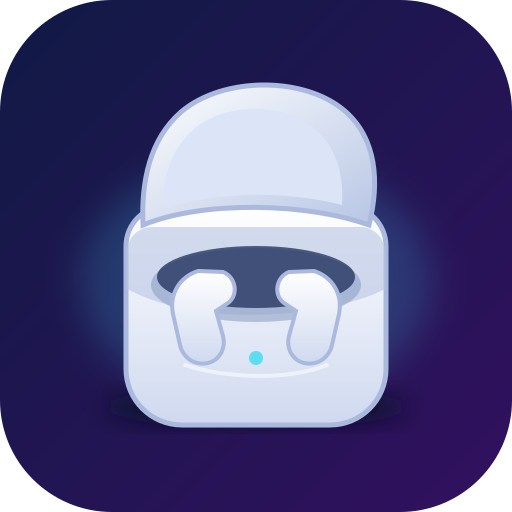

Rootful iOS 12 packages for iPod touch.
Repository address: https://ego-tistic.github.io/Ego-iPod/
Previously Pro-Pods. After the move, add this new address in your package manager.
Version 1.0.0 · Rootful arm64 iOS 12
Searchable app drawer and magnifying Mac-style dock. Light/dark themes, glass-inspired surfaces, opacity in 5% steps, hold-to-show app names, and a separate recent-app section of up to five apps. App choices affect only this launcher.
Requires Activator, PreferenceLoader and compatible MobileSubstrate injection. Assign Home Triple Press to Mac-Launcher while unlocked; preserve needed Accessibility shortcuts by choosing another gesture.
Compiled and package-checked for iOS 12; the final build's visual behavior, recent-app tracking and controls still require testing on the actual iPod/Amethyst installation. Installing or removing resprings SpringBoard.

Version 2.0.0~beta2 removes all Bluetooth mapping hooks following a report of repeated daemon restarts. It is a recovery build, not a disconnect fix.
Upgrade to beta2 or uninstall Pro-Pods, then restart and re-jailbreak to unload the earlier hooks. No preference can re-enable mapping in this build. Native headphone compatibility is not guaranteed.
A second crash report confirms a related allocator crash without Pro-Pods loaded. Other jailbreak injection remains present; a test before re-jailbreaking is the next comparison. Crash findings and test steps.
Uploaded-daemon analysis identified a misclassified supported-features getter in earlier builds. Beta2 already removes it; the playback disconnect remains undiagnosed. Binary review and next diagnostic step.
The exact uploaded PodsGrant 0.5.4 package has also been inspected. Package comparison and reconnect investigation.
Earlier Pro-Pods versions are withdrawn from the package index while hook signatures and crash evidence are investigated. Archived package files are not recommended for installation.
Download recovery update · Details and recovery
Adapted from PodsGrant by Ruphane. MIT license.